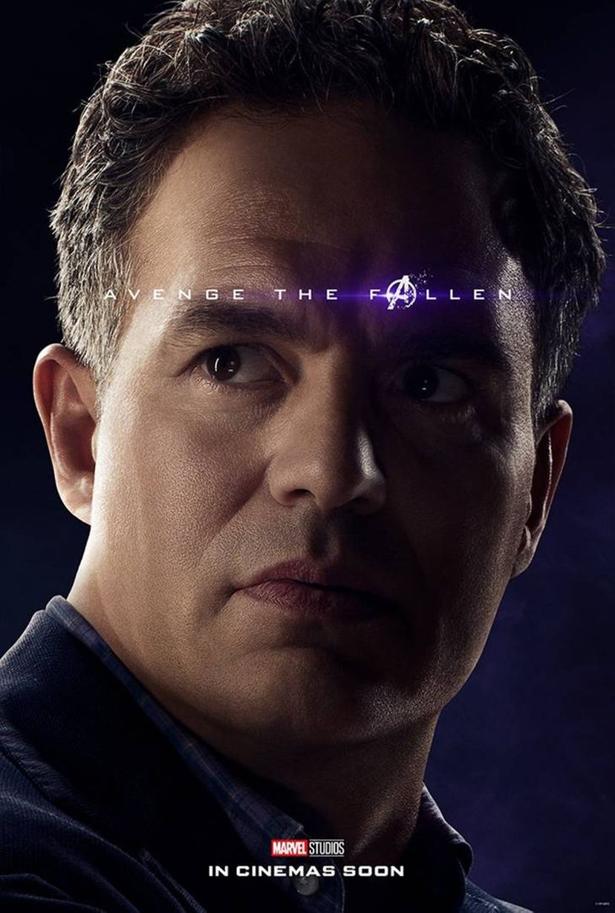

 Um cientista gênio que, por causa da exposição à radiação gama, se transforma em um monstro quando enfurecido ou agitado. Ruffalo, que foi considerado para interpretar Banner em O Incrível Hulk antes de Edward Norton assumiu o papel, foi escolhido depois de negociações entre Marvel e Norton não deram certo. Sobre a substituição de Norton, Ruffalo disse: "Eu sou um amigo de Ed, e sim, que não era uma ótima maneira para Norton ir ser substituído. Mas a maneira que eu vejo é que Ed ligou essa parte para mim. Eu olho para ele como de minha geração Hamlet". Sobre o personagem, ele disse: "Ele é um cara lutando com dois lados de si mesmo, a escuridão e a luz e tudo o que ele faz em sua vida é filtrado através de questões de controle. Eu cresci com a série de televisão Bill Bixby, que eu pensei que era uma forma humana realmente sutil e real de olhar para o Hulk. Eu gosto que a parte tem essas qualidades". Em relação lugar do Hulk na equipe, Ruffalo disse: "Ele é como nenhum companheiro da equipe e têm certeza do que quer em sua equipe. Ele é um canhão solto. É como, 'jogar uma granada no meio do grupo e vamos esperar ele sair bem!" Esta é a primeira produção em que o ator que interpreta o Hulk também toca Hulk. Ruffalo disse à New York Magazine: "Eu estou realmente animado, ninguém nunca interpretou o Hulk exatamente. Sempre fizeram em CGI e eles vão fazer o avatar em stop-motion, a captura de stop-motion, então eu vou realmente interpretar o Hulk. Isso vai ser divertido". Para criar a a voz do Hulk, a voz de Ruffalo foi misturado com a de Lou Ferrigno e outros. No entanto, apenas a linha de falar do Hulk foi fornecida exclusivamente pelo Ruffalo.